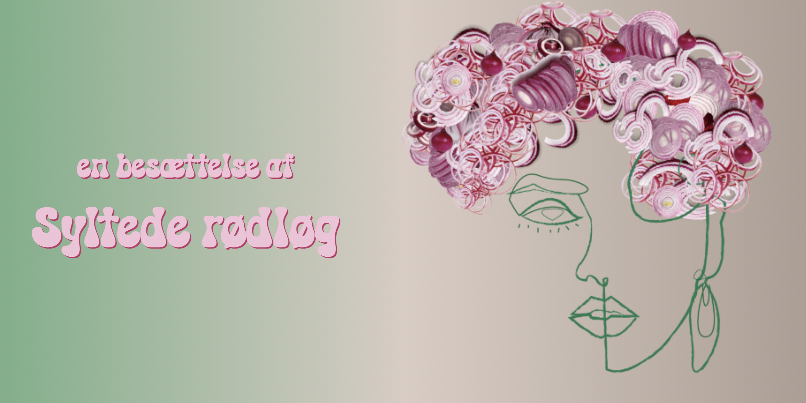
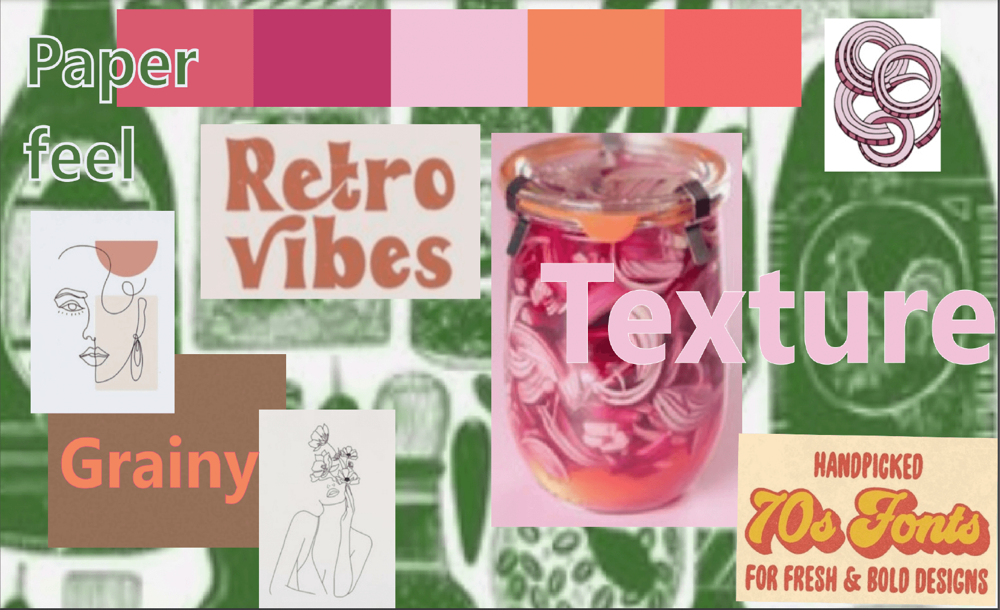
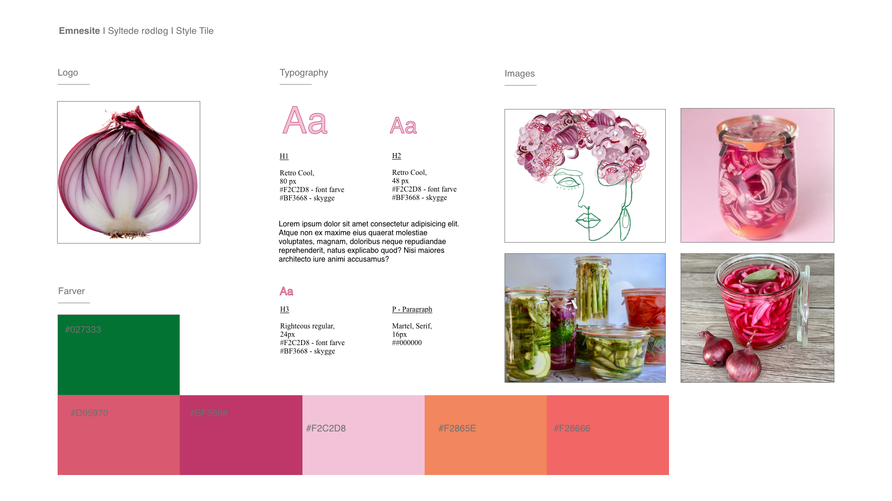
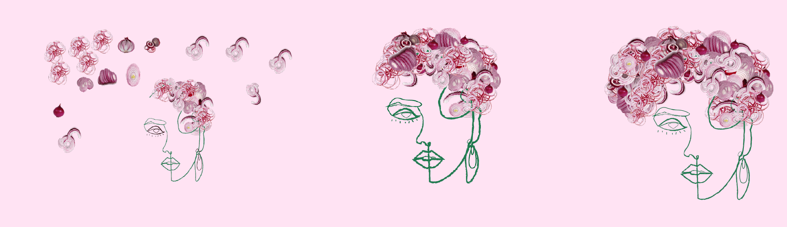
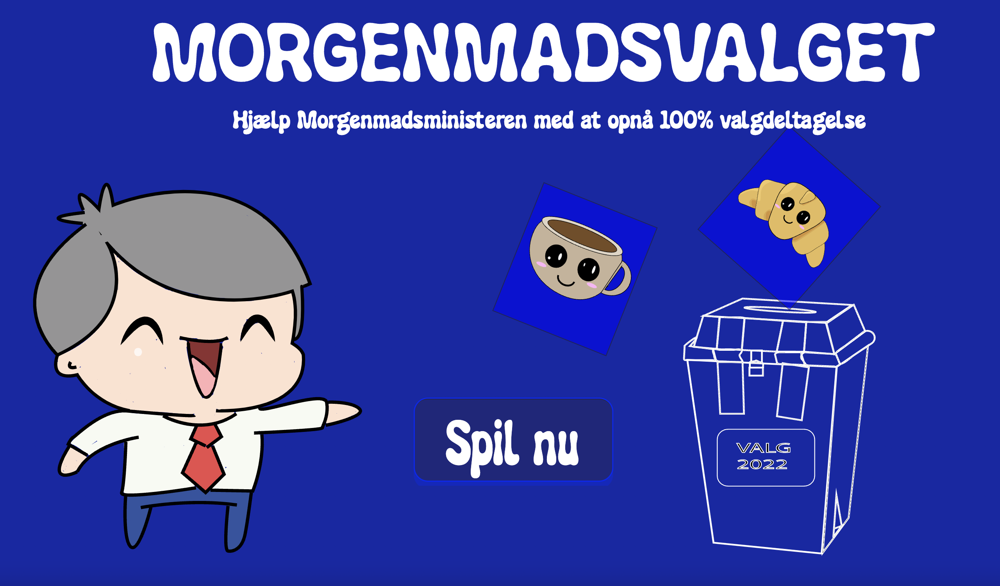
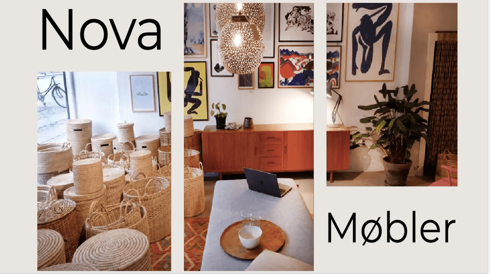
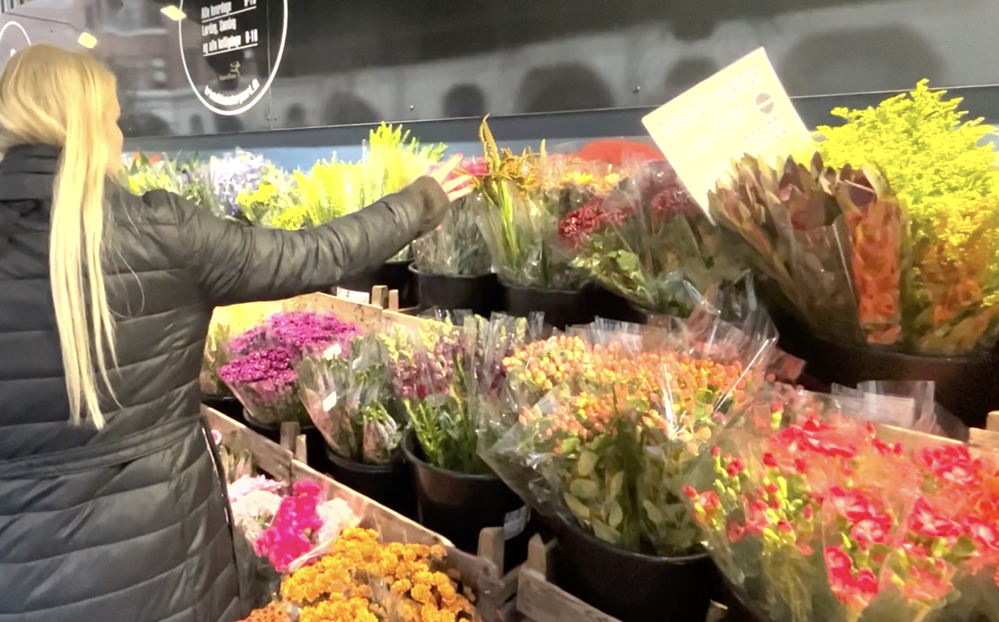

Portfolie
Velkommen til min portfolie. Her findes et overblik over produkterne fra de 6 temaer, som jeg har produceret på første semester.
Tema 2: Grundlæggende web
Gennem temaet grundlæggende web blev vi introduceret til de basale værktøjer, der er grundlaget for de nødvendige redskaber for en multimediedesigner. Vi blev introduceret til grundlæggende html, css og designkonventioner, der skal bruges ved udvikling af digitale brugergrænseflader, digital indholdsproduktion, kommunikation og responsivt webdesign. Derudover stiftede vi bekendtskab med moodboard, styletile, wireframes og skitsering, der er nogle af de redskaber, det hjælper med at styre processen ved udvikling af digitale brugergrænseflader. Det er desuden vigtige redskaber, når man skal arbejde som del af et team eller udvikle noget for en virksomhed, da det sikrer, at et team kan arbejde ud fra det samme udgangspunkt i et projekt - samtidigt sikrer det, at man er på bølgelængde med en kundens ønsker til et projekt, før arbejdskraften bliver brugt på kodning. Begreberne blev brugt i praksis i udarbejdelsen af de to hovedopgaver på temaet; studiestartsprøven og emnesite.
Emnesite: En passion for syltede rødløg
Processen
Moodboard
Styletile
Designprocess i Illustrator
Tema 3: Grundlæggende UX
Gennem temaet grundlæggende UX blev vi introduceret til de basale værktøjer, teorier og værktøjer, der bliver benyttet under udviklingen af digitale brugergrænseflader. Det foregik ved analyse af eksisterende hjemmesider, desk- og observation research, survey, interviews, fastsættelse af målgruppe og usp. UX er et hovedelement i udvikling af brugergrænseflader, da god UX skal sikre kunder får en god brugeroplevelse, der øger sandsynlighed for at brugere benytter den pågældende side – og derved kan blive loyale kunder. Research og test af prototyperne på potentielle kunder er derfor vigtigt, da designvalg derved baseres på konkrete indsigter og ikke en mavefornemmelse. Vi benyttede viden fra temaet i udvikling af prototype til en webshop, der sælger t-shirts.
MyTee

Tema 4: Grundlæggende Animation
I temaet grundlæggende animation blev vi introduceret til javascript. Javascript er en vigtig del i udviklingen digitale brugergrænseflader. Det gør det muligt at skabe interaktive elementer, der kan give en bedre brugeroplevelse og henlede en brugers opmærksomhed på specifikke elementer. Temaets opgave var, at vi skulle udvikle og kode et spil. Vi skulle samtidig designe ui-elementer og bruge designkonventioner til sammensætning af spillet.
Spil
Processen
Tema 5: Grundlæggende Indhold
I temaet grundlæggende indhold blev vi introduceret til videoproduktion. Vi fik kundskaber indenfor arbejdet med forberedelse til optagelse, optagelse og postproduktion. Vi blev igennem de færdigheder, vi har lært i temaet i stand til at formidle indhold gennem video. Temaets opgaver indebærer en pilotsite, hvor vi har udviklet et site udfra et interview med en person med en passion. Temaets anden opgave består af et re-design af en hjemmeside for en eksisterende hjemmeside.Vi blev derfor også introduceret til værktøjer som Trello og SCRUM, der er behjælpelig med at styre en proces med flere involveret.
Re-design af Nova Møbler
Processen
Pilotsite
Tema 6: Portfolie-eksamen
Til vores portfolie-eksamen er formålet at lave en portfolie-website, hvor vi skal demonstrere, at vi kan benytte teori, metode og de værktøjer, vi har lært i løbet af de tidligere temaer. Formålet er samtidigt at kunne reflektere over læring på de tidligere temaer.